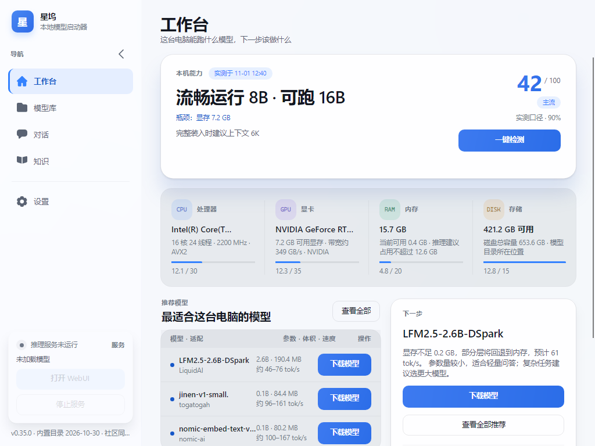
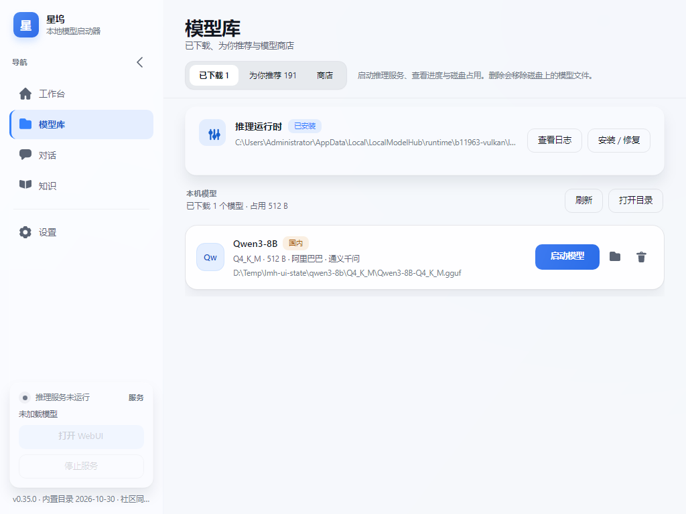
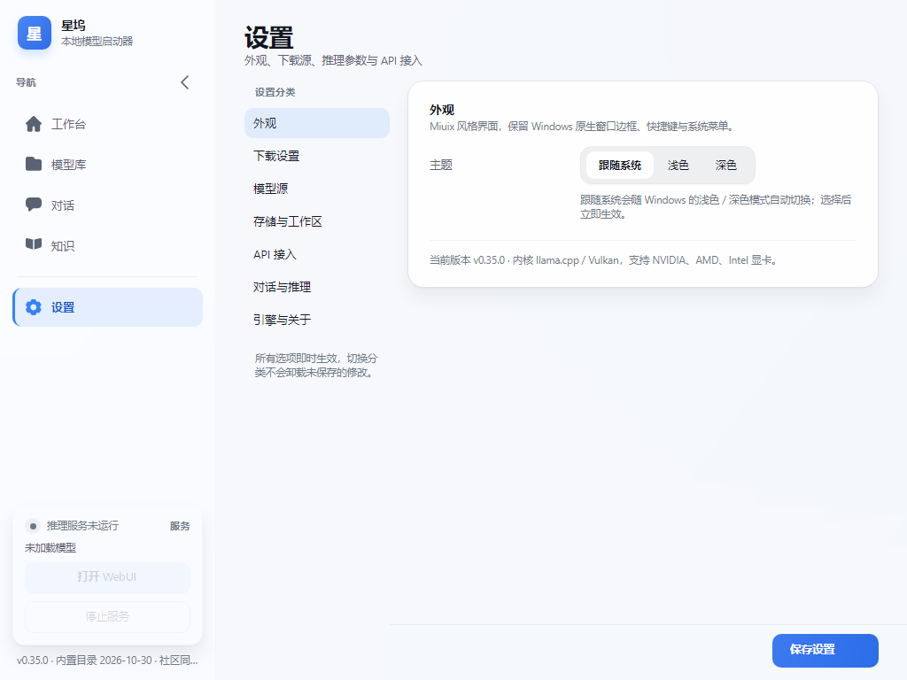
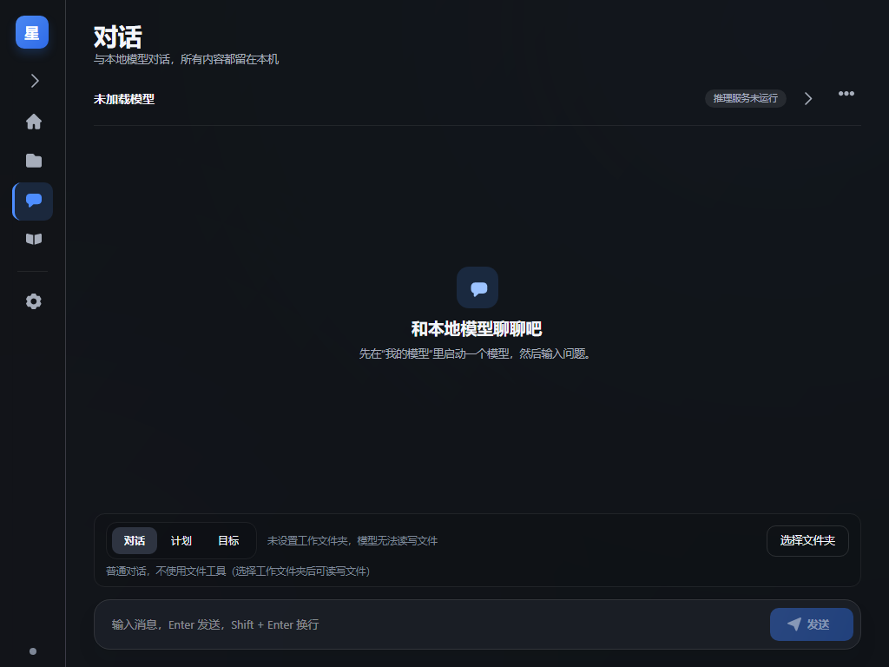
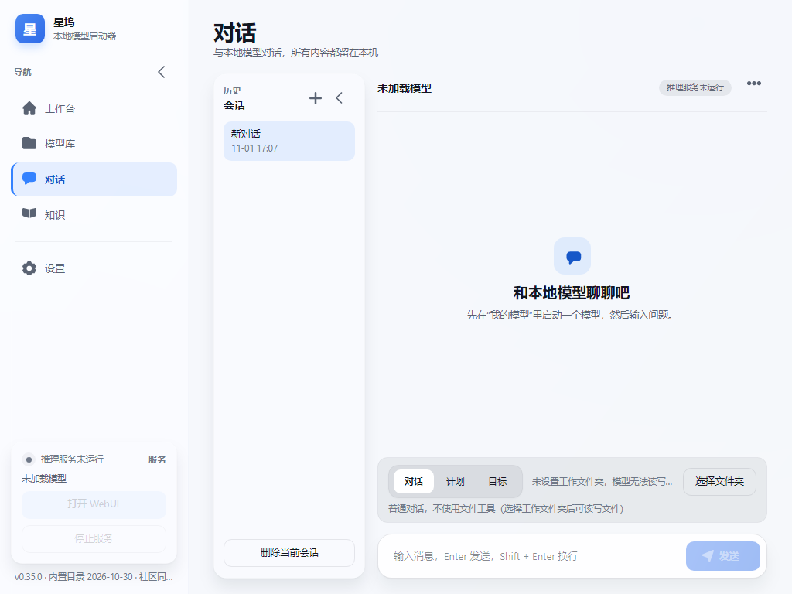
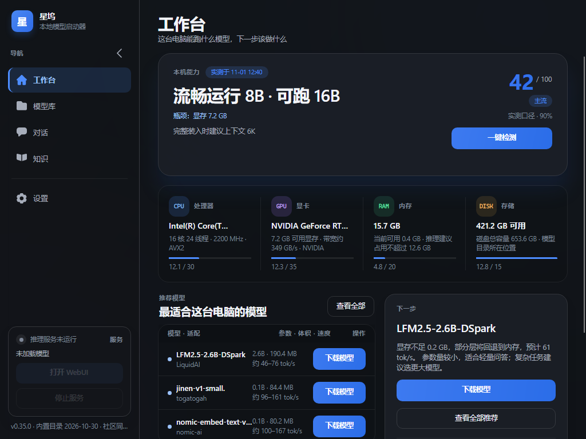
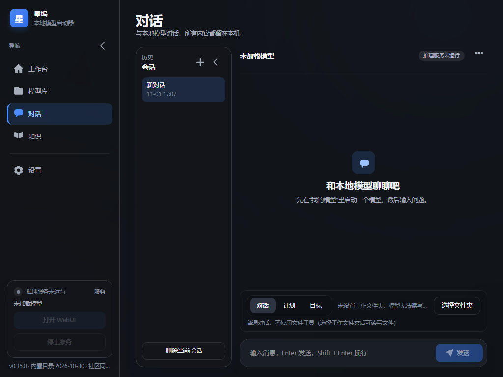
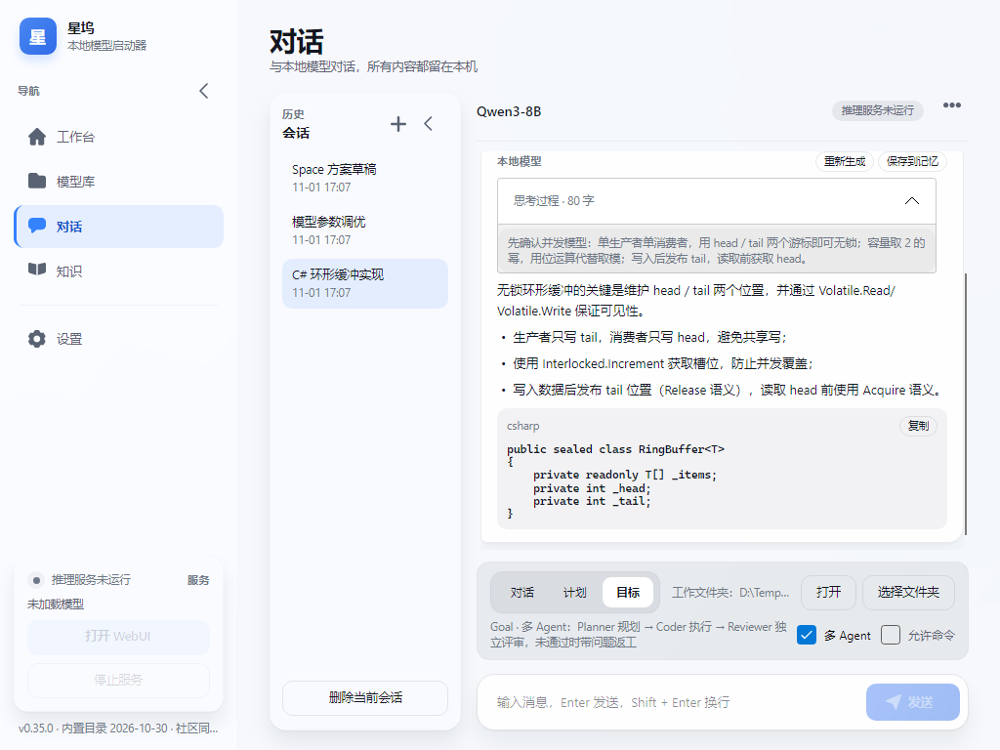

界面 UI 重构方案
依据「功能归属 + 使用频率」重新规划菜单层级，将可归类的功能收敛为两组可折叠二级菜单，统一视觉规范与交互规则，并对全部功能入口做了可访问性验证。
概览 / 对话 / 设置
模型 / 知识与记忆
全部经路由校验
含折叠态兜底
菜单结构树
侧边栏由「6 个平铺入口」改为「3 个一级 + 2 个可折叠分组」。高频且独立的功能留在一级；资源管理类与知识类功能按域收敛到分组内，进入分组时才展开，避免一次性铺满 9 个条目。
层级归属依据
| 入口 | 层级 | 路由键 | 归位理由 |
|---|---|---|---|
| 概览 | 一级 | dashboard | 打开应用后的第一落点，硬件检测与「查看全部推荐」是高频操作，保留独立入口。 |
| 对话 | 一级 | chat | 使用频率最高且无归属歧义，任何分组收纳都会增加一次点击。 |
| 模型 | 一级分组 | — | 三类操作都围绕「模型资源」这一同一心智：已下载（用）、推荐（挑）、商店（取）。 |
| 已下载 | 二级 | models.installed | 组内默认落地页；启动与删除服务属于「已有资源」的运维动作。 |
| 为你推荐 | 二级 | models.recommend | 与已下载同属「选型」，但依赖硬件评分结果，故与商店并列。 |
| 模型商店 | 二级 | store | 下载/导入属于「获取」环节，页面本身较重，不宜与一级入口抢注意力。 |
| 知识与记忆 | 一级分组 | — | 三者共同服务「对话增强」，且都属于低频配置型功能。 |
| 知识库 | 二级 | knowledge.docs | 组内默认落地页；文档导入与检索测试是知识域主入口。 |
| 长期记忆 | 二级 | knowledge.memory | 偏好与事实的沉淀，与知识库共享检索与注入链路。 |
| 技能 | 二级 | knowledge.skills | 由目标模式沉淀的执行步骤，属于「注入型」资料，与记忆同域。 |
| 设置 | 一级 | settings | 全局性配置，与任何业务分组都不构成从属关系，保持在底部独立入口。 |
界面布局示意图
整体维持「侧边栏 + 页头 + 内容区」三段式。本轮把层级信息补进页头：二级页面显示面包屑（如「模型 · 已下载」），让用户不必回看侧边栏也能确认当前位置。
实际渲染（Headless 截图，1024×768）






重构前后对比
| 维度 | 重构前 | 重构后 |
|---|---|---|
| 侧边栏条目 | 6 个平铺入口，全部同权重 | 3 个一级入口 + 2 个可折叠分组（收纳 6 项二级） |
| 层级表达 | 仅靠页面内分段标签栏，侧边栏无父级 | 父级标题 + 缩进子项 + 页头面包屑，三级信息一致 |
| 切换成本 | 模型相关需「我的模型 → 分段标签 → 目标页」两步 | 侧边栏一步直达；折叠态下再补一次展开 |
| 视觉冗余 | 页面内再放一组「已下载 / 为你推荐」标签，与侧边栏重复 | 页内标签栏移除，唯一切换入口收敛到侧边栏 |
| 分组状态 | 无折叠概念 | 手风琴：进入组自动展开并收起另一组；手动可独立收展 |
| 长页导航 | 设置页需长距离滚动 | 设置页顶部「快速定位」7 个锚点按钮，一键滚动到目标卡片 |
| 兼容性 | — | NavigateCommand(0–5)、Models.TabIndex、KnowledgeMemory.TabIndex 全部保留 |
设计规范
结构与尺寸
| 元素 | 尺寸 | 说明 |
|---|---|---|
| 侧边栏宽度 | 244 / 76 px | 折叠仅保留图标列，内容区自动获得宽度 |
| 一级菜单项 | 高 44 · 圆角 14 · 内边距 14 | 字号 13，激活态 AccentSoft 底 + Accent 文字 Semibold |
| 分组标题 | 高 40 · 圆角 14 · 字号 12.5 Semibold | 不整块高亮，激活时仅图标与文字转 Accent，避免与子项高亮重复 |
| 二级菜单项 | 高 36 · 圆角 12 · 左缩进 20 | 图标 14×14，激活态 AccentSoft 底 + Accent 文字 + Accent 图标 |
| 页头 | 外边距 30,24,30,10 | 面包屑 11px / 标题 28px / 副标题 muted，行距 3 |
| 内容区 | 左右内边距 30 | 卡片圆角 16–20，卡片间间距 14–18 |
| 分隔线 | 高 1 · 外边距 10,9 | 仅展开态显示，折叠态隐藏以保持图标列整洁 |
色彩与状态
| 状态 | 一级项 | 分组标题 / 二级项 |
|---|---|---|
| 默认 | 透明底 · TextSecondary | 分组：TextSecondary Semibold；二级：TextSecondary |
| 悬停 | InputBg 底 · TextPrimary | 分组与二级同规则；二级图标同步转 TextPrimary |
| 激活 | AccentSoft 底 · Accent 文字 Semibold | 分组仅文字/图标转 Accent；二级整块 AccentSoft + Accent 图标 |
| 激活悬停 | AccentSoftHover 底 | 二级同规则，保证连续悬停不闪烁 |
| 禁用 | 降低不透明度，保持 44px 点击区 | 适用于「打开 WebUI / 停止服务」等依赖运行时状态的按钮 |
深色主题使用同一套语义：Accent 提亮为 #4D8DFF，AccentSoft 改为 #1B2A44，其余通过 DynamicResource 自动切换，无需在视图层写条件分支。
交互规则
分组折叠（手风琴）
- 进入即展开：导航到模型域任一页，自动展开「模型」并收起「知识与记忆」；反向同理。
- 一级页面全收起：概览 / 对话 / 设置不携带子项，进入时两组均收起，避免空展开。
- 手动可并行：点击分组标题可独立收展，不会强制关闭另一组，避免当前高亮子项被隐藏。
- 折叠态兜底：侧边栏 76px 时点击分组图标不再折叠，而是直接进入该组默认页；「设置」等一级项照常直达。
高亮与位置感
- 双通道高亮：分组标题转 Accent 表示「我在这个域」，子项整块
AccentSoft表示「我在这一页」。 - 面包屑同步：二级页页头显示「父级 · 子级」；一级页自动隐藏面包屑，不占版面。
- 单源路由：所有入口共用
OpenRouteCommand+ 路由字典，页面索引、页签、标题、面包屑均从同一处推导，避免状态漂移。 - 零重复入口：模型页与知识页内的分段标签栏已移除，页内不再出现第二套切换控件。
设置页「快速定位」
设置页内容较长，顶部新增一张「快速定位」卡片，内含 7 个胶囊按钮：外观、下载设置、模型源、存储与工作区、API 接入、对话与推理、引擎与更新。点击调用对应卡片的 BringIntoView() 平滑滚动到目标区块，按钮位于滚动容器顶部，不会因滚动而丢失。
- 可扩展：新增设置分组时，只需给目标卡片加
x:Name并在JumpToSection的分支中补一条映射。 - 不改变原有保存逻辑：锚点仅控制视口位置，不触碰任何设置项的读写路径。
功能入口可访问性验证
以下 9 个路由由 UI 测试逐条打开并断言：页面索引、当前路由键、页头标题、当前页面视图类型、分组激活态与子项高亮态。任何一项不符即失败。
| 入口 | 路由键 | 索引 / 页签 | 断言项 | 结果 |
|---|---|---|---|---|
| 概览 | dashboard | PageIndex 0 | CurrentPage = Dashboard；两组均收起 | 通过 |
| 对话 | chat | PageIndex 3 | CurrentPage = Chat；IsChatActive | 通过 |
| 已下载 | models.installed | 1 · Tab 0 | IsLibraryActive；ShowModelsChildren = true | 通过 |
| 为你推荐 | models.recommend | 1 · Tab 1 | IsRecommendActive；组保持展开 | 通过 |
| 模型商店 | store | PageIndex 2 | IsStoreActive；IsModelsGroupActive | 通过 |
| 知识库 | knowledge.docs | 4 · Tab 0 | IsKnowledgeDocActive；ShowKnowledgeChildren = true | 通过 |
| 长期记忆 | knowledge.memory | 4 · Tab 1 | IsMemoryActive；IsKnowledgeGroupActive | 通过 |
| 技能 | knowledge.skills | 4 · Tab 2 | IsSkillsActive；组保持展开 | 通过 |
| 设置 | settings | PageIndex 5 | IsSettingsActive；两组收起 | 通过 |
附加交互验证
| 场景 | 验证内容 | 结果 |
|---|---|---|
| 分组手动折叠 / 展开 | 折叠后子项隐藏、图标切换 ▸ / ▾，再次展开恢复且不丢失当前高亮 | 通过 |
| 折叠态（76px）导航 | 点击分组图标直接落到组默认页，PageIndex 与子页签同步正确 | 通过 |
| 组间切换一致性 | 进入模型域时知识组自动收起，进入知识域时模型组自动收起 | 通过 |
| 页头面包屑 | 二级页显示「父级 · 子级」；一级页 HasHeaderCrumb = false | 通过 |
| 设置快速定位 | 7 个锚点按钮均能滚动到对应卡片（外观 / 下载 / 模型源 / 存储 / API / 对话与推理 / 引擎与更新） | 通过 |
| 浅色 / 深色 | 6 个页面 × 2 主题 + 多组业务状态截图渲染成功 | 通过 |
| 旧接口兼容 | NavigateCommand(0–5) 与原有页签属性语义不变，既有测试全部保留通过 | 通过 |
验证命令与结果
dotnet build LocalModelHub.sln -c Release → 0 错误（2 条既有警告，与本次改动无关）
dotnet test tests\LocalModelHub.Ui.Tests -c Release → 12 / 12 通过（含新增导航路由测试 Navigation_entries_open_every_route_and_keep_groups_consistent 与快速定位测试 Settings_quick_jump_buttons_are_wired_to_sections）
dotnet test tests\LocalModelHub.Core.Tests -c Release → 369 / 369 通过
验收清单
菜单与层级
- ✓一级仅保留高频与独立功能（概览 / 对话 / 设置）
- ✓可归类功能全部下沉至二级菜单（模型 3 项、知识与记忆 3 项）
- ✓页面内重复标签栏移除，菜单成为唯一切换入口
- ✓页头面包屑与侧边栏层级保持一致
交互与视觉
- ✓分组默认收起，进入分组自动展开、另一组自动收起
- ✓展开 / 收起无重排跳动，图标列与文字列宽度固定
- ✓悬停、激活、激活悬停三态一致，深浅主题同语义
- ✓长文本（版本号、路径）截断并提供 ToolTip，不撑破布局
功能与稳定性
- ✓9 个路由全部可达，折叠态具备兜底路径
- ✓启动模型、停止服务、WebUI 等运行时状态入口行为不变
- ✓设置项读写、下载源、API 接入等逻辑未改动
- ✓编译 0 错误；UI 测试 12/12、核心测试 369/369 通过
交付物
- ✓菜单结构树（图 1）
- ✓界面布局示意图（图 2 展开态 / 图 3 折叠态）
- ✓功能入口可访问性验证表（9 路由 + 7 项附加场景）
- ✓实机渲染截图（浅色 / 深色 / 折叠态）
Fluent 材质视觉升级（v2）
第一版只做了层级与信息结构，界面依然偏「普通扁平」。这一版在不动菜单层级、不新增功能的前提下，把视觉层换成 Windows 11 Fluent 的材质语言：渐变桌面底 + 柔光晕 + 半透明材质面板 + 细描边 + 双层柔阴影 + 克制的微动效。
材质配方（系统 Mica 为主，自绘材质作回退）
- 层 0 · 真磨砂（系统材质）：窗口声明
TransparencyLevelHint="Mica, AcrylicBlur, Blur, Transparent"，实际生效时底板完全透明并隐藏自绘光晕，桌面壁纸经 DWM 模糊后直接透出；不支持时自动回落到下面的自绘材质，任何系统版本都可读。深色主题同步DWMWA_USE_IMMERSIVE_DARK_MODE，避免磨砂底发白。 - 层 1 · 桌面底板：
AppBg为三停靠点冷调线性渐变（浅色#F9FAFE → #F1F3F9 → #E8ECF6）。 - 层 2 · 环境光：两枚
RadialGradientBrush光晕（右上蓝、左下青紫），透明度从 0x24 渐变到 0x00，营造 Mica 的「背景透出」感。 - 层 3 · 材质面板：侧边栏与工具条用
MicaBg（浅色#A6FBFCFF≈ 65% / 深色#9914171C≈ 60%）+MicaStroke1px 高光描边，形成可透出磨砂底的真半透明层。 - 层 4 · 卡片与阴影：卡片
CardBg为 92% 白（深色 86%），叠加「近距 1px 硬边 + 远距 26px 柔光」双层BoxShadow；悬停时阴影加深并上浮，既保留磨砂透感又保证文字对比度。
视觉 Token（浅色 / 深色）
| Token | 浅色 | 深色 / 用途 |
|---|---|---|
AppBg | #F9FAFE → #F1F3F9 → #E8ECF6 | #191C23 → #121419 → #0C0E12，窗口底板渐变 |
MicaBg | #A6FBFCFF | #9914171C，侧边栏 / 工具条材质层（真半透明） |
CardBg / CardHoverBg | #EBFFFFFF / #F7FFFFFF | #DC1C2028 / #EA222731，卡片默认与悬停 |
CardSunkenBg | #080B1220 | #1A000000，卡片内嵌数据块（适配结论、推理轨迹） |
Stroke 系列 | #170B1220 / #0C0B1220 / #2E0B1220 | #20FFFFFF / #12FFFFFF / #33FFFFFF，常规 / 细分隔 / 强描边 |
AccentInk | #1657C8 | #9CC3FF，深底上的强调文字 |
圆角 / 阴影 / 动效
| 层级 | 圆角 | 说明 |
|---|---|---|
| 控件（按钮 / 输入 / 下拉） | 9 | 替代原有大药丸圆角，贴近 Win11 控件手感 |
| 内嵌数据块 / 图标底板 | 10–12 | 卡片里的第二层容器，用 CardSunkenBg 下沉 |
| 材质面板 | 14 | 侧边栏、筛选工具条、会话列表、模式条 |
| 卡片 / hero | 16–18 | 统一为 16，hero 用 18 强调主结论 |
| 页面切换 | — | 0.26s CubicEaseOut 淡入（ScrollViewer.page / Grid.page） |
| 悬停 | — | 卡片背景 + 阴影 0.14s 过渡；按钮底色 0.12s 过渡，无位移动画保证不抖动 |
关键页的信息层级调整
结论前置：「流畅运行 8B」替代原来的硬件清单，评分卡右置佐证；四张硬件卡只留数值 + 一条 4px 进度；使用流程收进 hero 底部。
先回答「这台机器能不能跑」：适配结论与预估 tok/s 放进下沉数据块并置顶；徽标改 WrapPanel 换行，下载参数、量化对比、启动参数全部下移到卡片底部并加细分隔线弱化。
商店把三行筛选改成带「来源 / 地区 / 能力」标签的统一工具栏；对话页会话列表升为材质面板，用户气泡改用强调渐变，输入区与模式条统一为 12–14 圆角。
升级后渲染（1024×768，浅色 / 深色）




说明：静态截图无法反映悬停与切换动效；动效仅在 0.12–0.26s 内完成且不改变布局尺寸，因此不会造成点击错位或渲染抖动。所有改动只涉及 XAML 样式与布局，ViewModel 绑定与命令未做任何删改，功能入口可访问性验证（第 06 节）仍然全部通过。